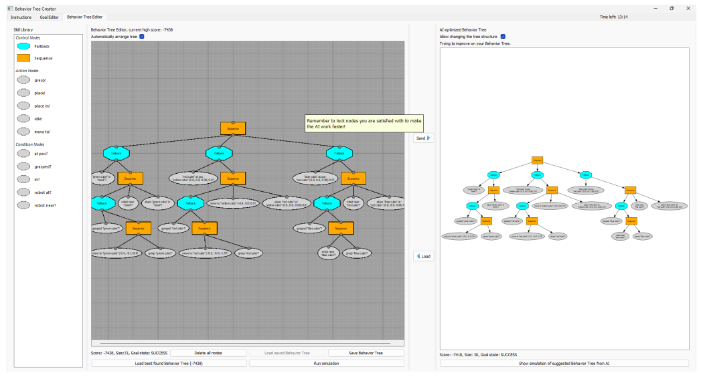
Design and Evaluation of an Assisted Programming Interface for Behavior Trees in Robotics
Jonathan Styrud, Matteo Iovino, Rebecca Stower, Mart Kartašev, Mikael Norrlöf, Mårten Björkman, and Christian Smith.
Since starting university I have been attracted by the domains of Robotics and Automation.
I am adaptable, resourceful and always dedicated to the objectives I am assigned to.
I am very comfortable with teamwork and always open to dialogue. I think that my best assets are rigor and work planning.
September 2025 - Present | ETH Zürich, Zürich, Switzerland
 Academic Guest at the Mobile Robotics Lab (MRL), led by Prof. Stefan Leutenegger.
Academic Guest at the Mobile Robotics Lab (MRL), led by Prof. Stefan Leutenegger.
Recipient of the WASP International Postdoctoral Scholarship.
June 2023 - August 2025 | ABB Corporate Research, Västerås, Sweden
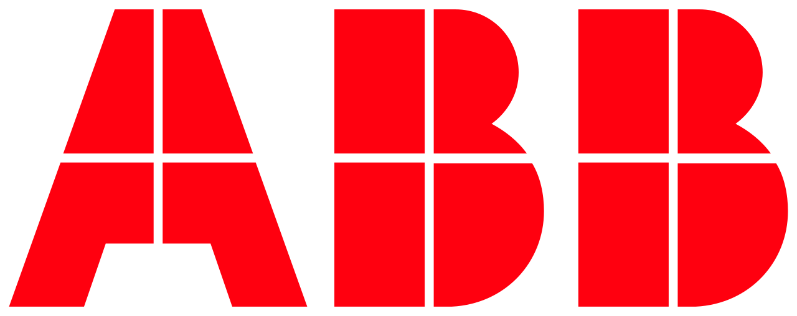
Enhancing collaborative robots with AI-ready skills.
Competences: Project Management, Python, ROS2, Git.
February 2019 - June 2023 | ABB Corporate Research, Västerås, Sweden
Learning Behavior Trees for ease of use of robots.
Competences: Python, ROS2, Git.
August 2021, August 2022 | WASP, Sweden
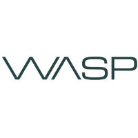
The task for the students is to design a Behavior Tree to control a robot solving a mobile manipulation task.
The robot has to pick items from two different conveyor belts and place them in a delivery station. The robot should recharge batteries when needed.
The code repository for the tutorial is available here.
April 2018 - September 2018 | ABB Corporate Research, Västerås, Sweden
Set up of a simulation environment with ROS and Gazebo for a mobile manipulation task.
Competences: C++, C#, RAPID (RobotStudio), ROS, Mobile Manipulation.
March 2017 - August 2017 | Safran Nacelles, Le Havre, France
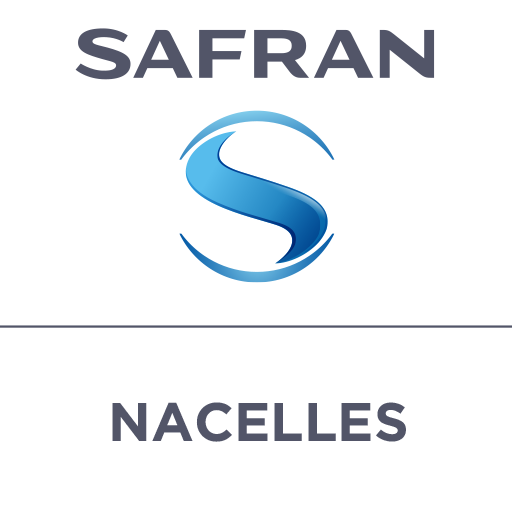
Competences: AMESim modelling and contorl of hydraulic components.
2019 - 2023 | KTH - Royal Institute of Technology, Stockholm, Sweden
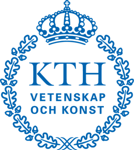
Division of Robotics, Perception and Learning (RPL).
Research on learning Behavior Trees for ease of use of robots operating in dynamic industrial environments.
Third cycle courses on Machine Learning and Robotics.
April 2022 - September 2022 | ETH Zürich, Zürich, Switzerland
 Autonomous System Lab (ASL), led by Prof. Roland Siegwart.
Autonomous System Lab (ASL), led by Prof. Roland Siegwart.
Receiver of a 150.000 SEK Grant from WASP.
2015 - 2018 | Università degli Studi di Padova, Padova, Italy | 110/110 Cum Laude
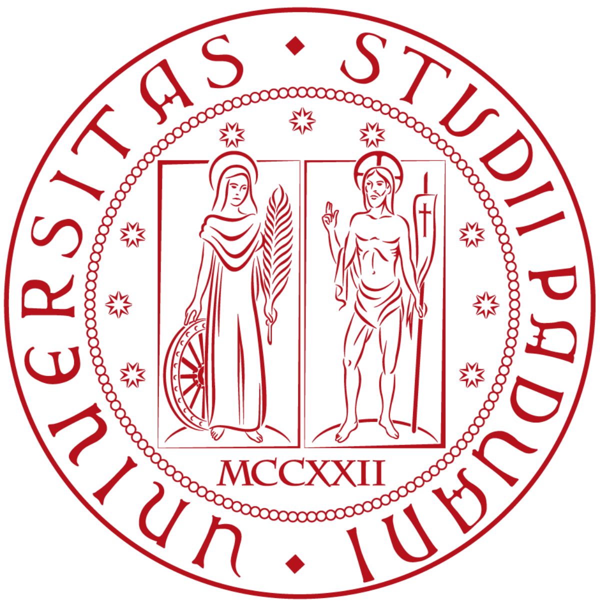
Digital Control, Control of Mechanical Systems (PID control), Systems Theory (state space control, LQ control), Estimation and Filtering (maximum likelihood estimator, Wiener filter, Kalman filter, Particle filter), Digital Signal Processing, Advanced Topics in Control (non linear control theory).
2016 - 2018 | École Centrale de Nantes, Nantes, France | Major: Robotics | GPA 3.82
 Double Degree in the T.I.M.E. (Top International Managers in Engineering) Association.
Double Degree in the T.I.M.E. (Top International Managers in Engineering) Association.
Manipulator Robot Modelling, Advanced Programming (C++), Vision for Robotics, Non Linear Control and Observation, Intelligent Vehicle and Transport, Modelling and Control of Unmanned Systems (aerial/submarine), Middleware (ROS).
2012 - 2015 | Università degli Studi di Padova, Padova, Italy | 103/110
Mathematical Analysis 1 and 2, General Physics 1 and 2, Linear Algebra and Geometry, Computer Architecture, Data Structure and Algorithms 1, Signals and Systems, Systems and Models, Statistical Data Analysis, Control Theory, Electronics, Digital Electronics, Microelectronics Laboratory, Telecommunications.
Bachelor Thesis: Amplificatori Audio di Potenza
Jonathan Styrud, Matteo Iovino, Rebecca Stower, Mart Kartašev, Mikael Norrlöf, Mårten Björkman, and Christian Smith.
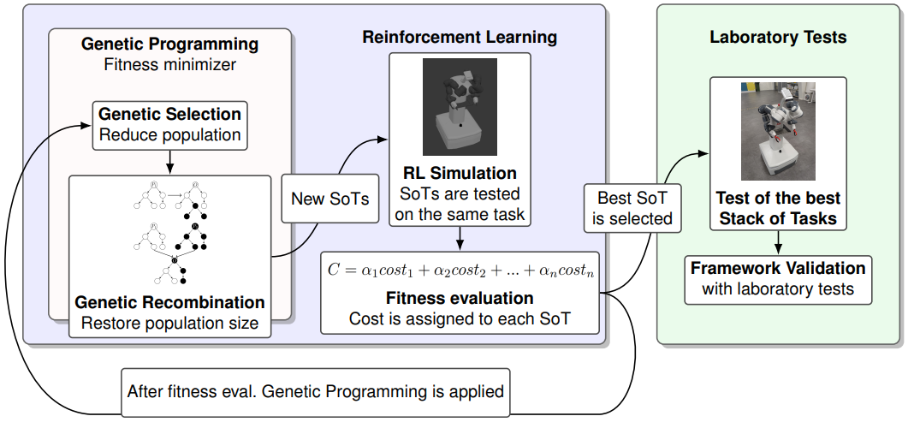
Alessandro Adami, Aris Synodinos, Matteo Iovino, Ruggero Carli, Pietro Falco.
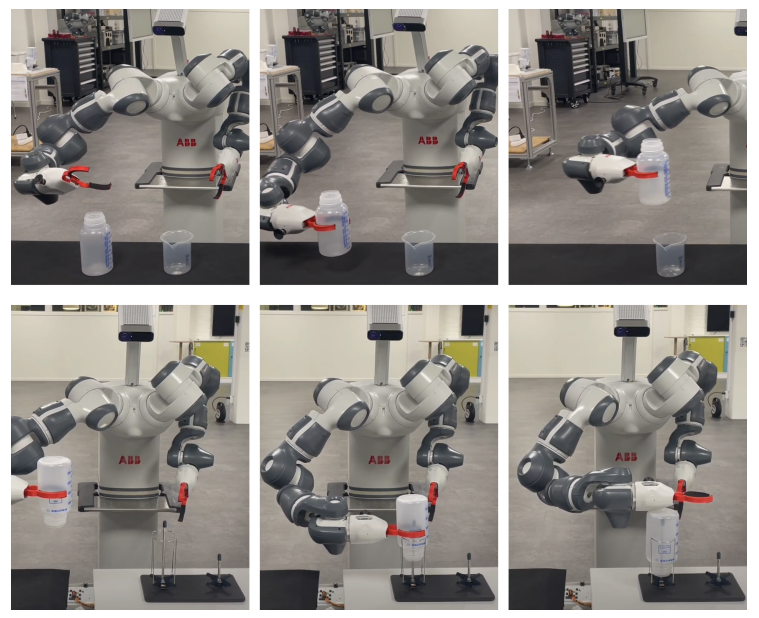
David Cáceres Domínguez, Marco Iannotta, Abhishek Kashyap, Shuo Sun, Yuxuan Yang, Christian Cella, Matteo Colombo, Martina Pelosi, Giuseppe F Preziosa, Alessandra Tafuro, Isacco Zappa, Finn Busch, Yifei Dong, Alberta Longhini, Haofei Lu, Rafael I Cabral Muchacho, Jonathan Styrud, Sebastiano Fregnan, Marko Guberina, Zheng Jia, Graziano Carriero, Sofia Lindqvist, Silvio Di Castro, Matteo Iovino.
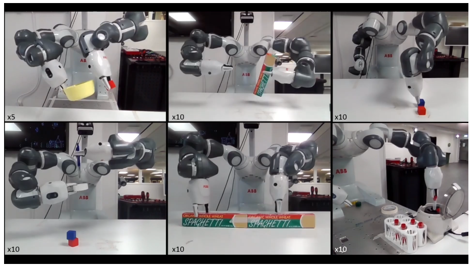
Niccolò Turcato, Matteo Iovino, Aris Synodinos, Alberto Dalla Libera, Ruggero Carli, Pietro Falco.
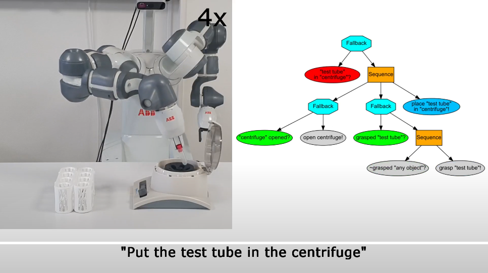
Jonathan Styrud, Matteo Iovino, Mikael Norrlöf, Mårten Björkman, Christian Smith.
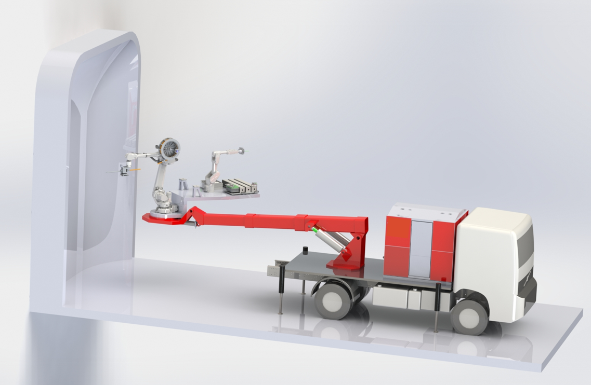
Mattias Hallen, Matteo Iovino, Shiva Sander-Tavallaey, Christian Smith.
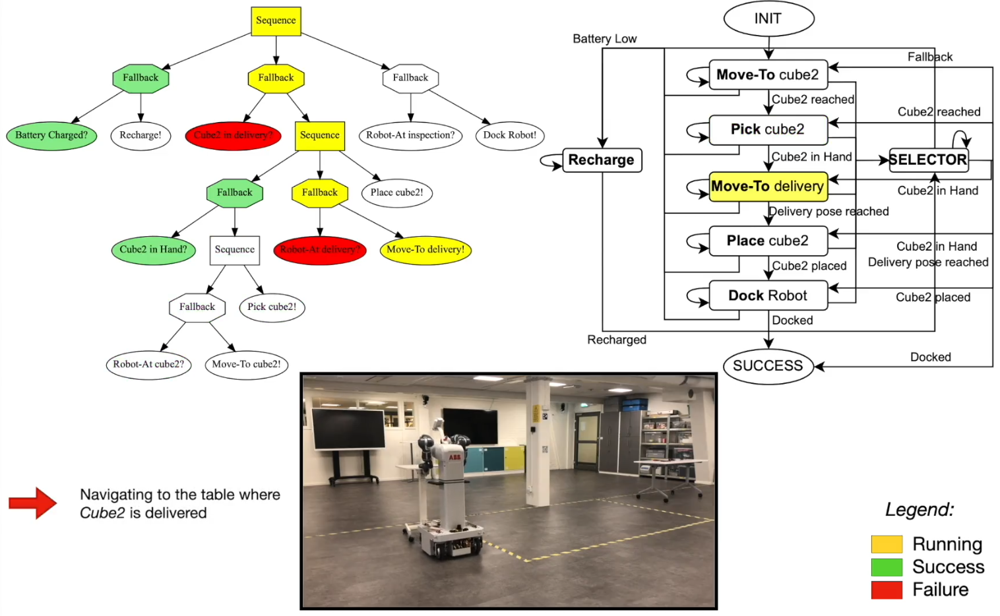
Matteo Iovino, Julian Förster, Pietro Falco, Jen Jen Chung, Roland Siegwart, Christian Smith.
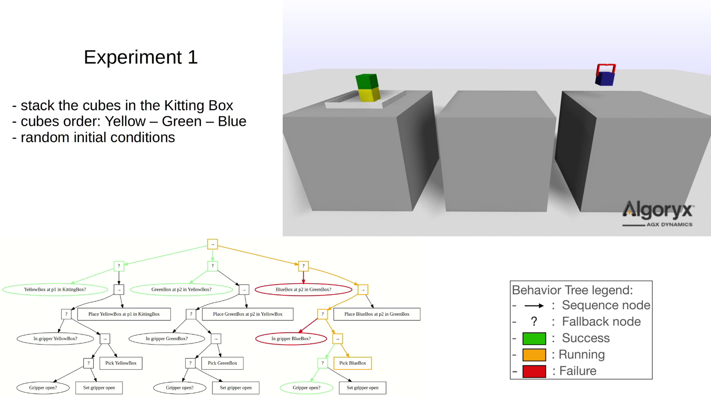
Matteo Iovino, Jonathan Styrud, Pietro Falco, Christian Smith.
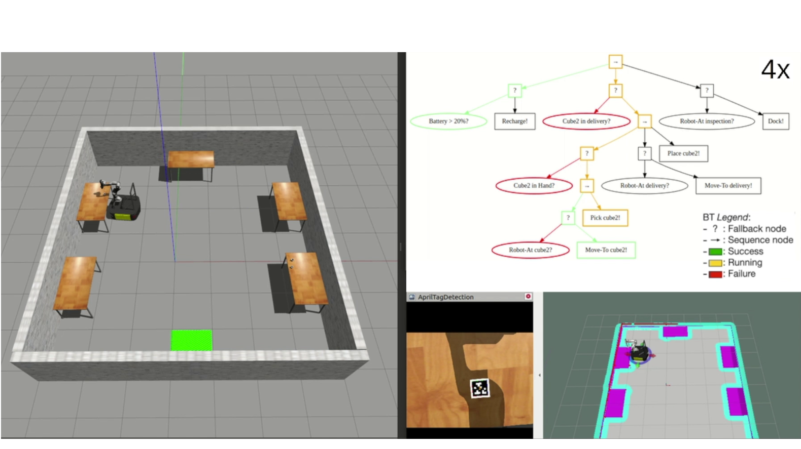
Matteo Iovino, Julian Förster, Pietro Falco, Jen Jen Chung, Roland Siegwart, Christian Smith.
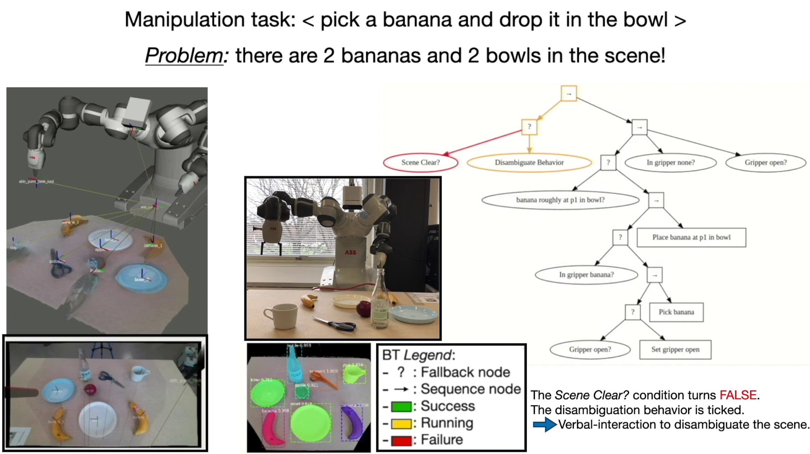
Matteo Iovino, Fethiye Irmak Doğan, Iolanda Leite, Christian Smith.
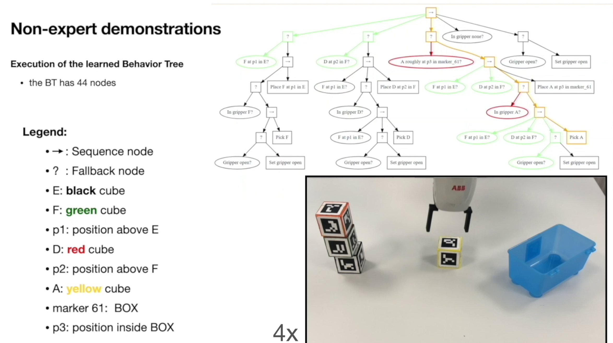
Oscar Gustavsson, Matteo Iovino, Jonathan Styrud, Christian Smith.
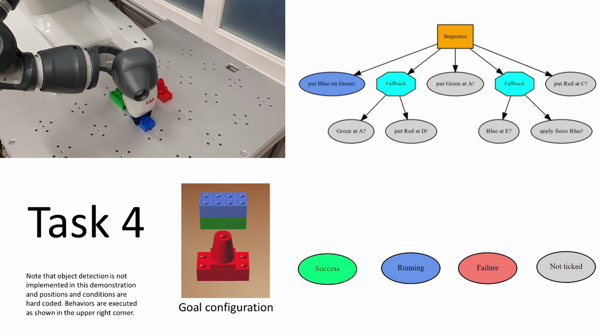
Jonathan Styrud, Matteo Iovino, Mikael Norrlöf, Mårten Björkman, Christian Smith.
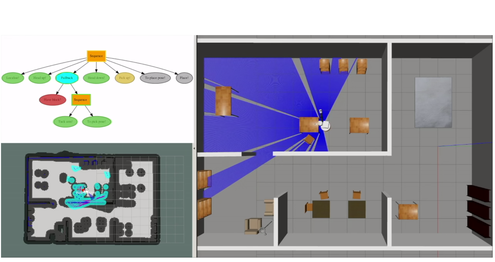
Matteo Iovino, Jonathan Styrud, Pietro Falco, Christian Smith.
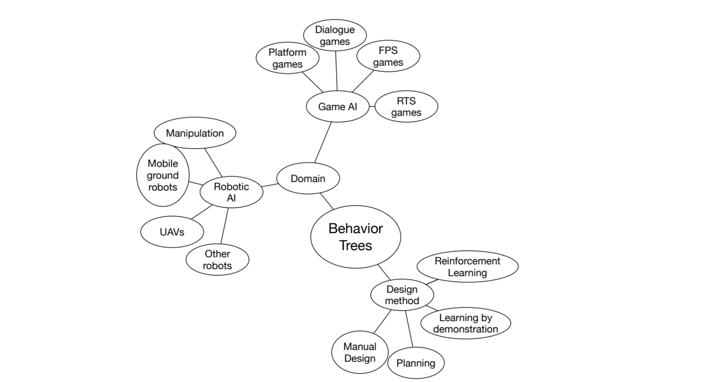
Matteo Iovino, Edvards Scukins, Jonathan Styrud, Petter Ögren, Christian Smith.
Jonathan Styrud, Matteo Iovino.
Sebastian Zudaire, Matteo Iovino, Fabio Amadio, Aris Synodinos, Jianjun Weng.